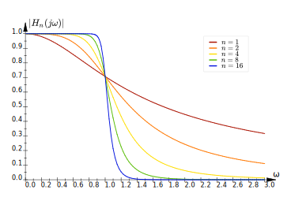

Discretization of a Second-Order Butterworth Filter
Pieter PButterworth Filters
Normalized Butterworth filters are defined in the frequency domain as follows:
$$ \left|H_n(j\omega)\right| \triangleq \frac{1}{\sqrt{1+\omega^{2n}}} $$

In order to determine the transfer function, we'll start from the frequency response squared.
We'll assume that the transfer function \(H_n(s)\) is a rational function with real coefficients.
Therefore, \(\overline{H_n(s)} = H_n\left(\overline{s}\right)\).
$$ \begin{split}
\left|H_n(j\omega)\right|^2 \;=\; & H_n(j\omega) \overline{H_n(j\omega)} \\
\;=\; & H_n(j\omega) H_n(\overline{j\omega}) \\
\;=\; & H_n(j\omega) H_n(-j\omega) \\
\;=\; & \frac{1}{1+\omega^{2n}}
\end{split} $$
We're looking for the transfer function \(H_n(s)\), so we'll use the identity \(s = j\omega \Leftrightarrow \omega
= \frac{s}{j}\).
$$ H_n(s) H_n(-s) = \frac{1}{1 + \left(\frac{s}{j}\right)^{2n}} $$
The poles of this transfer function are given by:
$$ \begin{split}
& \left(\frac{s}{j}\right)^{2n} = -1 \\
\Leftrightarrow \quad & s^{2n} = -1 \left(j\right)^{2n} \\
\Leftrightarrow \quad & s^{2n} = -1 \left(-1\right)^n \\
\Leftrightarrow \quad & s^{2n} = \left(-1\right)^{n+1} \\
\Leftrightarrow \quad & s^{2n} = e^{j\pi(n+1)}
\end{split} $$
Keep in mind that this is a polynomial of order \(2n\), so it has \(2n\) complex roots.
$$ s_k = e^{j2\pi\frac{2k + n + 1}{4n}} \quad k = \{0, 1, \dots 2n - 1\} $$
For example, for \(n = 3\), the poles are:
$$ \begin{split}
s_0 \;=\; & e^{j2\pi\frac{0 + 3 + 1}{12}} \;=\; e^{j2\pi\frac{2}{6}} \\
s_1 \;=\; & e^{j2\pi\frac{2 + 3 + 1}{12}} \;=\; e^{j2\pi\frac{3}{6}} \\
s_2 \;=\; & e^{j2\pi\frac{4 + 3 + 1}{12}} \;=\; e^{j2\pi\frac{4}{6}} \\
s_3 \;=\; & e^{j2\pi\frac{6 + 3 + 1}{12}} \;=\; e^{j2\pi\frac{5}{6}} \\
s_4 \;=\; & e^{j2\pi\frac{8 + 3 + 1}{12}} \;=\; e^{j2\pi\frac{6}{6}} \\
s_5 \;=\; & e^{j2\pi\frac{10 + 3 + 1}{12}} \;=\; e^{j2\pi\frac{1}{6}}
\end{split} $$
These are all points on the unit circle, \(\pi/3 = 60°\) apart.
We want our filter \(H_n(s)\) to be stable, so the poles in the left half plane are the poles of \(H_n(s)\) and the
poles in the right half plane are the poles of \(H_n(-s)\).